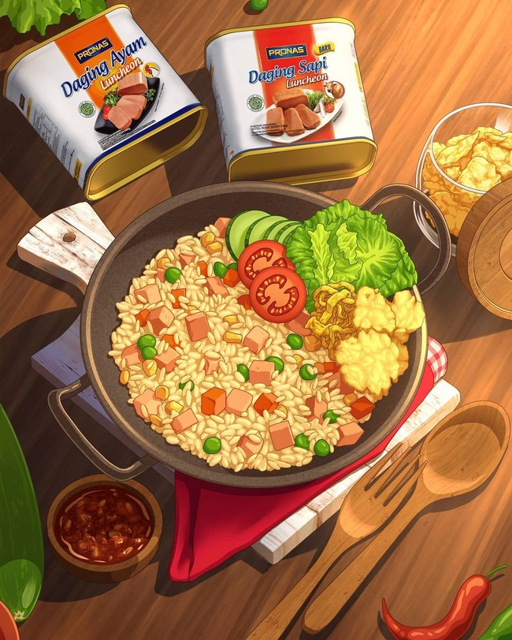

pemesanan
di posting pada tanggal 17 januari
NASGOR, more commonly referred to as Padang satay is a speciality satay from Minangkabau cuisine, made from beef cut into small cubes with spicy sauce on top. Its main characteristic is the thick yellow sauce made from rice flour mixed with beef and offal broth, turmeric, ginger, garlic, coriander, galangal root, cumin, curry powder and salt. In Medan, many Sate Padang use not only beef but a
selengkapnya